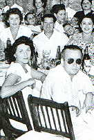
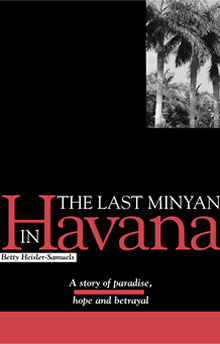

The Last Minyan in Havana
Betty Heisler-Samuels
The
Last Minyan in Havana is the story of the
Jews of Cuba, from the years that preceded World War II
until the coming of the Castro revolution. Based on a true
story, the novel follows the life of an immigrant in Poland
to find his fortune in Havana, his wonder at the lushness
of his new tropical home, where he finds a new life, and
the heartbreak of a tragedy that will mark him forever.
The story is played out against the vibrant rhythm of the
40's and 50's when Hollywood Stars made Havana their playground,
and the betrayal of Castro's revolution, which brought to
an abrupt end democratic Cuba and its thriving Jewish community.
|
Betty Heisler-Samuels was born in Cuba of Eastern European
parents. After Castro's communist regime took over the island
she fled with her family to Miami, where she graduated from
the School of Journalism. She worked for the Spanish edition
of The Miami Herald, Vanidades, and the Spanish
editions of Cosmopolitan and Harper's Bazaar
before starting Donde Magazine, the first Spanish-language
city magazine that was published in Miami. She now publishes
Entre Nosotros, a Spanish-Jewish magazine that circulates
in Florida and South America. The Last Minyan in Havana
is her first novel.
|
|
Betty Heisler-Samuels
|

Her mother and father (foreground)
at a celebration in Havana, 1945
|
(Book excerpt, from pages 107-108)
Ironically, in spite of its
best efforts, Cuba was destined to play a crucial role in
the wave of refugees that had started to flood America shores.
Geography had placed the small island in the crossroads
of two worlds and history would throw thousands of displaced
souls in its path, forcing it to deal with history in its
own terms.
On July of 1936 American authorities
proposed that Cuba, due to its strategic location open its
doors to 100,000 German Jews, but the announcement aroused
bitter antisemitic comments in the Cuban press and the proposal
was quickly dropped. A year later the Joint Distribution
Comittee created the Jewish Relief Committee in Havana to
aid the steady stream of refugees that had started to to
come to Cuba. Every day brought hundreds, sometimes as many
as five hundred people to the small, understaffed office
of the JDC looking for money to live on and information
on how to get to the United States or bring relatives into
Cuba. Haim, Gitel and Jacob now looked anxiously into ways
to bring in the rest of the family when Haim got a letter
from Hannah.
|
|
|
Order your copy today!
Price: $14.95 USD plus shipping and handling.
In Florida, add 6.5 % tax.
$4.00 postage and handling EE.UU. and Puerto
Rico
$3.00 (postage and handling ) for each additional copy.
$8.00 postage and handling outside the U.S.
$5.00 (postage and handling ) for each additional copy
outside the United States.
To order
your copy by mail please send a check or money order to:
19355 NE 36th CT.
Suite 21 K
Aventura, FL 33180
To order your copy by phone,
please call: (305) 935-6867
|

|
|